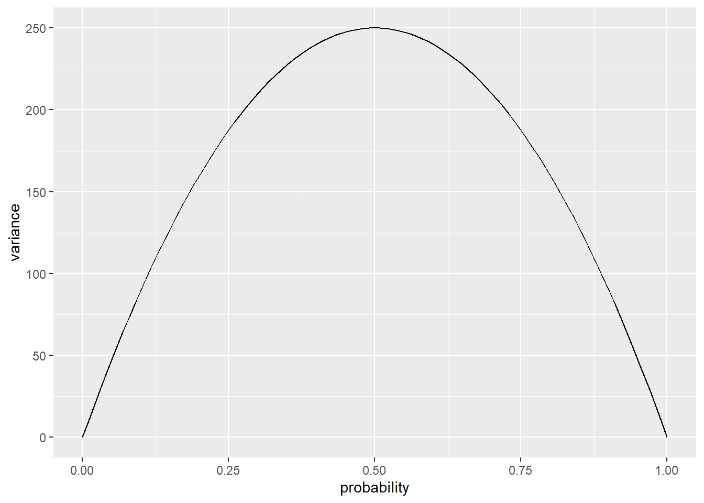

rainy_days <- tibble(
city = rep(c("Barcelona", "Glasgow"), each = 500),
days_of_rain = c(rbinom(500, 365, 55 / 365), rbinom(500, 365, 170 / 365))
)
注释
本系列内容是本人对2024年翻译的《学习统计模型——通过R模拟》的简单搬运。 该书翻译内容已部署于Netlify平台，考虑到部分爱好者可能无法正常访问该平台，特将内容搬运到博客，方便大家参考学习。
2026年3月2日查询原文github，显示部分文件于1年前更新，受个人精力限制，不对更新内容进行对比，还是推荐有条件者阅读原文。
1 离散(discrete)数据 vs. 连续(continuous)数据
到目前为止，我们考虑的所有模型都假设测量的响应变量(即因变量)是连续的且是数值型的。然而，在心理学中，很多情况下我们的测量结果是离散的。离散数据的一种类型是可能值的有限值集合，且可能值之间有间隔，例如使用李克特量表获得的数据。另一种类型的离散数据是响应变量反映没有内在顺序的类别(通常称为“名义(nominal)”数据)，例如餐馆顾客点的是鸡肉、牛肉还是豆腐。
离散数据在心理学中很常见。以下是一些离散数据的例子：
- 说话者产生的语言结构类型(双宾语结构或介词短语结构)；
- 被试在给定时间内观看的是哪一组图像；
- 被试是否做出了准确或不准确的选择；
- 求职者是否被录用；
- 李克特量表上的同意度。
另一种常见的数据类型是计数数据，其中数值也是离散的。通常在计数数据中，某件事发生的机会数量没有明确定义。一些例子：
- 自然语言语料库中的语误次数；
- 每年在某个路口发生的交通事故次数；
- 在给定月份中看医生的次数。
1.1 为什么不将离散数据建模为连续数据？
离散数据具有一些特性，这些特性通常使得尝试使用连续数据模型来分析它们变得不合适。例如，如果你对某些二元事件(被试在强制选择任务中的准确性)的概率感兴趣，每次测量将表示为0或1，分别表示不准确或准确的响应。你可以计算每个被试的准确响应比例并分析它(确实很多人这么做)，但这是一个糟糕的想法，原因有很多。
1.1.1 有界尺度(dounded scale)
离散数据通常具有有界尺度。它可能是有下界的(如计数数据下界为0)，也可能同时有上界和下界(如李克特量表数据或二元数据)。如果你尝试使用为连续数据设计的方法来建模有界数据，那么模型可能最终将非零概率分配给尺度之外的不可能值。
使用连续数据模型分析有界数据可能会导致虚假的交互效应。例如，考虑某种实验干预对准确性的影响。如果被试在条件A中已经非常准确(如超过90%)，而在条件B中较低(如50%)，那么(干预)在A中的可能效果很可能小于在B中的可能效果，因为准确性不能超过100%。因此，很难确定交互效应是反映了理论上有意义的东西，还是单纯是尺度有界的产物。
1.1.2 方差依赖于均值
在大多数连续数据设置中，通常假设方差与均值无关；这本质上是对含有连续预测变量的模型的方差齐性(homogeneity of variance)假设。对于离散数据，这种方差独立于均值的假设通常不成立。
我们可以通过数据模拟看到这一点。rbinom()函数可以模拟二项分布的数据，该分布描述了一组行为的离散观测值。让我们考虑一下巴塞罗那(Barcelona, Spain)和格拉斯哥(Glasgow, U.K)在某一天的降雨概率。根据这个网站，巴塞罗那每年平均有55天下雨，而格拉斯哥有170天。因此，格拉斯哥某一天的降雨概率可以估计为170/365，大约是0.47，而巴塞罗那的概率是55/365，大约是0.15。让我们模拟500年的降雨数据(假设气候恒定)。
如果我们看一下每个城市模拟数据的标准差，我们可以看到格拉斯哥的变异性更大。
rainy_days %>%
group_by(city) %>%
summarise(variance = var(days_of_rain))# A tibble: 2 × 2
city variance
<chr> <dbl>
1 Barcelona 45.5
2 Glasgow 73.3对于二项分布的数据，方差由\(np(1-p)\)给出，其中\(n\)是观测次数，\(p\)是“成功”的概率(上述例子中某一天降雨的概率)。下图显示了\(n=1000\)的情况；注意，当概率接近0和1时，方差变得很小，而在0.5处达到峰值。

2 广义线性模型
广义线性模型[不要与一般线性模型(General Linear Models)混淆]的基本思想是指定一个链接函数(link function)，将响应空间(response space)转换为建模空间(modeling space)，这样我们可以执行常规线性回归，并通过方差函数(variance function)捕捉方差对均值的依赖性。模型的参数将在建模空间的尺度上表示，但我们总是可以使用逆链接函数(inverse link function)将其转换回原始的响应空间。
有很多不同类型的广义线性模型可以拟合不同类型的数据。在心理学中最常用的是逻辑回归(logistic regression)和泊松回归(Poisson regression)，前者用于二分类数据(伯努利试验，Bernoulli trials)，后者用于试验次数未明确规定计数数据。我们将重点关注逻辑回归。
3 逻辑回归
3.1 术语
| Term | Definition |
|---|---|
| 伯努利试验 | 具有二元结果的事件，其中一个结果被认为是“成功” |
| 概率(proportion) | 伯努利试验的成功次数与总次数之比 |
| 发生比(odds) | 成功对失败的比率 |
| 对数发生比(log odds) | 发生比的(自然)对数 |
注：odds也有人翻译为几率，考虑到几率表意并不直观，且易与概率(proportion)混淆，发生比又有些拗口，很多材料也不去翻译，所以本文之后直接使用odds和log odds。
在逻辑回归中，我们在log odds空间中建模响应变量与一组预测变量之间的关系。
逻辑回归用于个体结果是伯努利试验(具有二分类结果的事件)的情况。通常两种结果之一被称为“成功”，编码为1；另一种结果称为“失败”，编码为0。需要注意的是，“成功”和“失败”这两个术语是完全随意的，不应该认为更可取的类别总是编码为1。例如，当抛硬币时，我们可以同样选择“正面”为成功，“反面”为失败，反之亦然。
通常，伯努利试验序列的结果通过概率(成功次数与试验总次数的比率)来传达。例如，如果我们抛硬币100次，得到47次正面，那么我们的概率就是47/100或0.47，这也将是我们对事件可能性的估计。对于编码为1和0的事件，计算概率的便捷方法是使用mean()函数。
我们也可以谈论成功的odds，例如，正面与反面的odds是一比一，即1:1。格拉斯哥某天降雨的odds是170:195；分母是没有下雨的天数(365 - 170 = 195)。用小数表示，170/195约等于0.87，这被称为natural odds。natural odds的范围是0到\(+\infty\)。给定\(N\)次试验中成功\(Y\)次，我们可以将natural odds表示为\(\frac{Y}{N - Y}\)。或者，给定一个概率\(p\)，我们可以将odds表示为\(\frac{p}{1-p}\)。
odds的自然对数，或logit，是进行逻辑回归的尺度。回想一下，对某个值\(Y\)的对数给出在给定底数下使\(Y\)成立的指数。例如，16的\(log_2\)(以2为底的对数)是4，因为\(2^4 = 16\)。在逻辑回归中，通常使用的底数是\(e\)(也称为欧拉数，Euler’s number)。例如，要从格拉斯哥降雨的odds中得到log odds，我们会使用log(170/195)，其结果为-0.1372011；要从log odds中恢复natural odds，我们会使用逆运算exp(-.137)，其结果约为0.872。
3.2 log odds的性质
log odds = \(\log \left(\frac{p}{1-p}\right)\)
log odds具有一些适用于线性建模的优秀性质。
首先，它是围绕0对称，且log odds等于0对应最大的不确定性，即概率为0.5。正的log odds意味着成功比失败更可能(成功的概率 > 0.5)，负的log odds意味着失败比成功更可能(成功的概率 < 0.5)。log odds为2表示成功比失败可能性大的程度与-2表示失败比成功可能性大的程度相同。其尺度是无界的，范围从\(-\infty\)到\(+\infty\)。
3.3 链接函数和方差函数
逻辑回归的链接函数是：
\[\eta = \log \left(\frac{p}{1-p}\right)\]
而逆链接函数为:
\[p = \frac{1}{1 + e^{-\eta}}\]
其中\(e\)是欧拉数。在R中，In R, 你可以将逆链接函数写成：1/(1 + exp(-eta))。
方差函数为二项分布的方差，即：
\[np(1 - p)\]
下面的app允许你在log odds空间中操控一条线的截距和斜率，并查看该线在响应空间中的投影。请注意该函数在响应空间中是S形(“sigmoidal”)。
3.4 在R中估计逻辑回归模型
对于单层数据，可以使用glm()函数。请注意，这个函数与你已经熟悉的lm()函数非常相似。主要区别在于你需要为链接/方差函数指定一个family参数。对于逻辑回归，可以使用family = binomial(link = "logit")。二项分布的链接默认值是logit链接，因此只需输入family = binomial即可。
glm(DV ~ IV1 + IV2 + ..., data, family = binomial)
对于有随机效应的多层数据，可以使用lme4包中的glmer函数：
glmer(DV ~ IV1 + IV2 + ... (1 | subject), data, family = binomial)